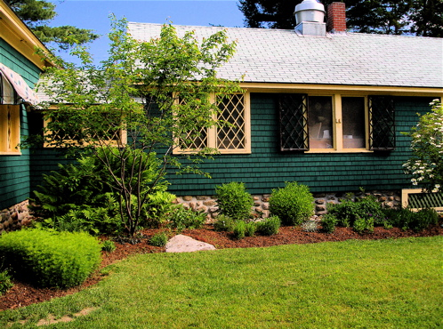
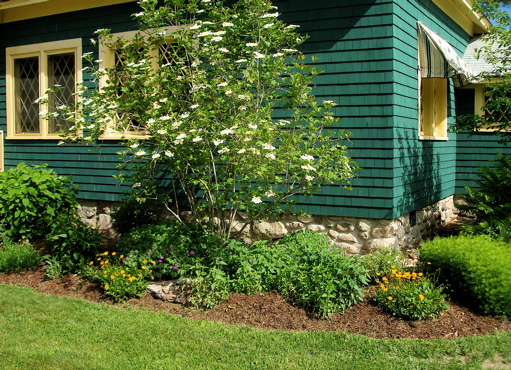
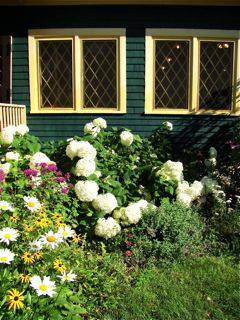

Volunteers needed for the CRC Gardens

Garden in Spring (R. Price).
|

Garden in Spring (R. Price).
|
As you drive toward the welcoming front porch of Conant Lodge, a beautiful flower garden in front catches your eye. This garden, along with the one in front of the Recreation Hall, was planted with native plants, such as rudbeckia, potentilla, coneflower, geranium, coreopsis, pachysandra, bee balm, viburnum. Each spring, during Opening Weekend, volunteers “wake up” the gardens, rake, prune, divide, deadhead, mulch and prepare the beds for the coming season. Again, during Work Weekend in May, the gardens receive additional care and maintenance. While we need volunteers for these two weekends, we also need volunteers to keep an eye on the gardens throughout the summer by deadheading, weeding and cutting back as needed.
If you are interested in providing needed attention to the gardens during your stay at CRC, please contact the Cold River Camp Committee chair at amc.crcchair@gmail.com. The time involved would be minimal, instructions can be provided and the results will be instant!! The necessary tools are at CRC; all we need are the willing volunteers.
Garden in Full Bloom (A. Grover)